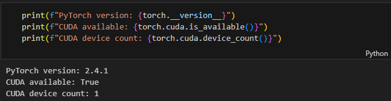
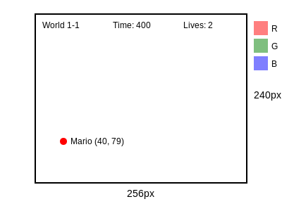
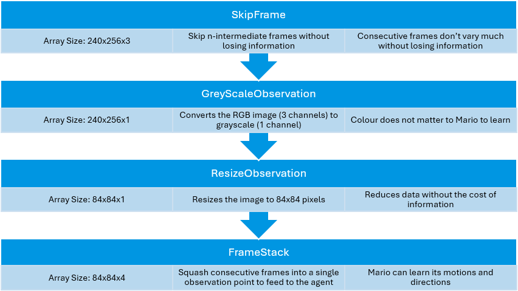
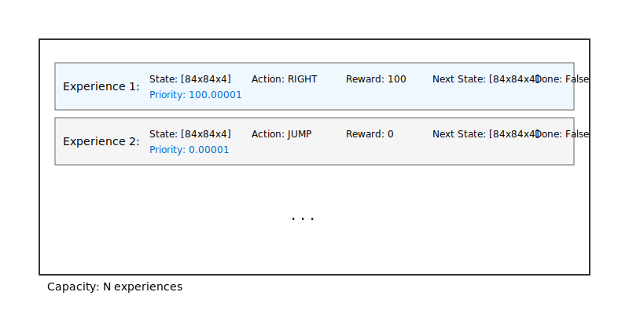
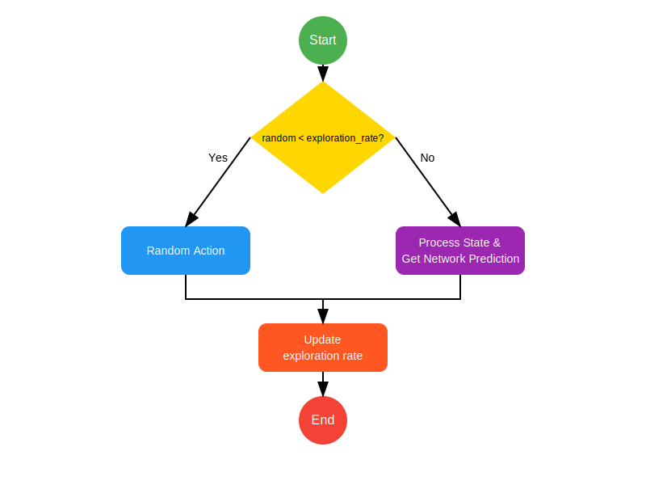

Training Mario with Reinforcement Learning
Date Created: November 12, 2024
Date Modified:
In a lovely day, I asked myself, how can I make a computer learn to play Mario? Well, I did just that, and I embarked on this journey to understand reinforcement learning (RL) better. This blog post documents my experiments with training an AI agent to play Super Mario Bros using a Double Deep Q-Network (DDQN).
What is Reinforcement Learning?
Reinforcement learning (RL) is a type of machine learning where an agent learns by interacting with its environment to achieve a specific goal. The agent takes actions and receives rewards or penalties based on the effectiveness of those actions. Over time, the agent uses this feedback to adjust its behavior, aiming to maximize cumulative rewards.
RL is commonly used in gaming, robotics, finance, or any setting where sequential decision-making under uncertainty is required. For example, an RL agent can learn to play video games by trying different strategies and learning from the outcomes. A famous example is AlphaGo, which used RL to beat world champions in the game of Go. There are also power agents in games like AlphaStar in StarCraft and OpenAI Five in Dota 2 to play at superhuman levels.
In the case of Mario, the agent's actions are moving left or right, jumping, or shooting fireballs.
The basic elements of reinforcement learning include:
- Agent: The learner or decision-maker that interacts with the environment.
- Environment: The setting in which the agent operates.
- Action: Choices the agent can make.
- State: The current situation or context in which the agent finds itself.
- Reward: Feedback given to the agent to indicate success or failure.

"For any given state, an agent can choose to do the most optimal action (exploit) or a random action (explore)." This is something that agent has to learn to make better decision. This trade-off between exploration and exploitation is a key challenge in reinforcement learning.
Core Concepts

Imagine you're playing a video game. You are the agent (the character you control), and the environment is the game world (the levels, obstacles, and everything around you). You can see things happening in the game (like a monster coming toward you) and decide what to do next (maybe jump, run away, or fight back), which is the environment.
States and Observations
The state is like a snapshot of everything in the game world at a specific moment. For example, where the monsters are, what items are around, and how much health you have. Observations are what the agent can see or know about the world. Sometimes you can see everything (like in a game where you can see the whole map), and sometimes you can only see part of it (like if you're inside a building in the game and can't see the outside). This means the state is the complete picture (fully observed if agent can see the state) while the agent can only see part of it (partially observed, agent can only see a partial observation), most of the time.
Action Space
Action space is the set of all possible things you can do in the game. For example, you might have options like "jump", "run", or "attack". These are the actions the agent can choose from.
In some environments, such as Atari games and Go, the agent operates within discrete action spaces, meaning there are a limited number of possible actions it can take. Other environments, like where the agent controls a robot in a physical world, have continuous action spaces. In continuous spaces, actions are real-valued vectors.
Policies
A policy is like a set of rules or a plan that tells the agent what to do based on what it sees. So, if you see a monster, your policy might tell you to jump, or if it is attacking you first, you fight back. If you see a treasure, your policy might tell you to collect it.
Since the policy acts as the agent's brain, the terms "policy" and "agent" are often used interchangeably. For example, one might say, "The policy aims to maximize the reward."
In deep RL, we use parameterized policies. These policies are functions whose outputs depend on a set of parameters, such as the weights and biases of a neural network. In adjusting these parameters through optimization algorithms, we can change the behavior of the policy.
A policy can be either deterministic or stochastic.
Trajectories
A trajectory is a sequence of states and actions in the world, like the path the agent takes through the game. It's the series of actions the agent takes, starting from the beginning until the end. It's like the story of what you do in the game.
Trajectories are also frequently called episodes or rollouts.
Rewards
The goal of Reinforcement Learning (RL) is for the agent to get better by practicing and learning from what happens when it takes different actions. The agent gets rewards for good actions and tries to do more of those to maximize its total reward.
The reward function, written as 𝑅 , tells the agent how good or bad a certain action was. This depends on: Where the agent was (the state it was in, like a level in a game), What action it just took (like moving, jumping, or grabbing something), Where it ended up (the next state, after the action). So we could write it as: 𝑅=𝑅(𝑠,𝑎,𝑠′)
Sometimes, though, it's simpler to look only at where the agent is now (or where it is and what action it took).
The agent doesn’t just care about the reward from one action—it cares about getting the most points or rewards over time. This total score over a period is called the return, written as R(τ). There are a couple of ways to look at return:
- Finite-Horizon Undiscounted Return: adding up all the points you get in a short level or time period in a game.
- Infinite-Horizon Discounted Return: look at all rewards the agent ever gets (an infinite horizon), but we use a discount factor (written as γ) to make future rewards worth a bit less.
Prioritize short-term gains (like going for treasures) but still consider discounted long-term rewards (by factoring in future treasures after defeating the monster). Plus, using a discount factor makes the math easier. For each decision, it might calculate a value estimate based on both immediate rewards and discounted future rewards. So, even if it avoids one monster initially for a quick treasure, it might tackle the next if it seems worthwhile.
Initial Setup
Note: This blog follows the instructions from this tutorial. Discussion and modifications that entails will be attempted to make sense of the article and the code.
Setting up the environment was quite the adventure. If you've worked with Python packages before, you know the usual suspects - version conflicts, deprecation warnings, and the occasional "this doesn't work like it used to" moments.
- Outdated components
- Compatibility issues because some functions are deprecated
- Getting the right combination of dependencies' versions
After a few hours of debugging and package juggling, I finally got everything working together.
To list the whole dependencies I used would be a bit much, but here are the main ones:
pytorch=2.4.1=py3.8_cuda12.4_cudnn9_0
torchrl=0.5.0
torchvision=0.20.0
gym=0.26.1
gym-super-mario-bros=7.4.0
numpy=1.24.4
matplotlib-base=3.7.3
You can see that I used CUDA and cuDNN for GPU acceleration. To find the right versions, I recommend checking here, the official PyTorch website, or using miniconda conda-forge channel for up-to-date packages. Once you have the right versions, it will look something like this:
Initialise Environment
In Mario, tubes, mushrooms, etc... are the components of the environment. This is where the agent will interact with the game world, taking actions and receiving rewards based on its performance.
# Initialize Super Mario environment (in v0.26 change render mode to 'human' to see results on the screen)
if gym.__version__ < '0.26':
env = gym_super_mario_bros.make("SuperMarioBros-1-1-v0", new_step_api=True)
else:
env = gym_super_mario_bros.make("SuperMarioBros-1-1-v0", render_mode='rgb', apply_api_compatibility=True)
# Define the movement options for Super Mario
MOVEMENT_OPTIONS = [
["right"], # Move right
["right", "A"], # Jump right
]
# Apply the wrapper to the environment
env = JoypadSpace(env, MOVEMENT_OPTIONS)
env.reset()
next_state, reward, done, trunc, info = env.step(action=0)
print(f"{next_state.shape},\n {reward},\n {done},\n {info}")
This code snippet initializes the Super Mario environment, sets up the movement options, and applies a wrapper to the environment, which will helps the agent interact with the environment by providing a set of actions it can take. As a test, the code prints out the next state, reward, done flag, and info after taking the first action in the environment.
When you call env.step(action=0), you're telling Mario to perform action 0, which from the MOVEMENT_OPTIONS list is moving right. Of course, you can change the action to 1, which is a jump right. The function returns the next state (a 240x256x3 image), the reward (0.0 in this case), a done flag (False, meaning the episode is not over), and some additional information about the environment. This is something that Mario will probably see (for illustration purposes):
Think of it like pressing the right button for a split second, checks if you get a reward, game over or not, and then returns the new state of the game. This is a single step in the game, the interaction loop will continue until the game is over or the AI beat the game.
Pre-process the Environment
In the previous output, the next state was a 240x256x3 image which is returned by the environment. Often, this is too much information for the agent to process directly. Mario does not need to see the entire screen to make decisions. Instead, we will apply wrappers to the environment to pre-process the images and make them more manageable for the agent.

The final output is smaller by almost 85%, which means faster processing and less memory usage. This is much simpler than what a human sees, but contains all the essential information needed to learn how to play the game effectively.
Replay Buffer
A replay buffer is like a "memory bank" that stores the agent's experiences while it plays the game. Each experience consists of: The current state (what Mario sees), the action taken, the reward received, the next state, and whether the game ended (done flag). Something like this:
In this tutorial, the author uses TensorDictReplayBuffer with LazyMemmapStorage, which is a custom replay buffer implementation. The replay buffer stores experiences (state, action, reward, next state, done) and samples mini-batches for training the agent. Only, I failed to get it running.
Apparently, this is a Windows-specific error occurs when the system tries to allocate more virtual memory than is available. Since I don't want to mess with the system too much and I don't have any money for RAM yet, I decided to use a simpler replay buffer implementation and called it SimpleReplayBuffer.
| SimpleReplayBuffer | TensorDictReplayBuffer with LazyMemmapStorage |
|---|---|
| Uses simple Python deque for storage | More sophisticated memory management |
| Implements basic prioritized experience replay | Uses memory mapping for large datasets |
| Straightforward memory management | More complex data structures |
| Less feature-rich but more robust | More features but more potential points of failure |

My SimpleReplayBuffer does 2 key things:
- push (Storing Experiences):
- It takes a snapshot of what happened during one step of Mario's gameplay.
- It calculates how important this memory is (priority = |reward| + epsilon).
- It stores the experience in a deque and the priority in a separate deque.
- sample (Prioritized Sampling):
- Think of this like Mario "remembering" past experiences to learn from. He will takes in how many memories to recall (batch_size) and prefers to remember important moments (high rewards).
- If picking importance memories failed (due to zero probabilities), it will fallback to random memories.
- Then, it converts chosen memories to format for learning (GPU tensors).
Even though it is essentially the same with TensorDictReplayBuffer, the SimpleReplayBuffer is actually a better solution for my current setup. It is lightweight, easy to understand, and doesn't require any special dependencies. Plus, it is easier to debug and modify if needed.
It's-a me, Mario!
It's time create the Mario-playing agent. Basically, Mario should be able to:
- Act according to the optimal policy (exploit) or try new things (explore) based on the current state.
- Remember experiences. Experience = (current state, current action, reward, next state). Mario will cache and recall these experiences to update his policy.
- Learn from these experiences, which means updating his policy to maximize rewards over time.
Act
def act(self, state):
"""
Given a state, choose an epsilon-greedy action and update value of step.
Inputs:
state(``LazyFrame``): A single observation of the current state, dimension is (state_dim)
Outputs:
``action_idx`` (``int``): An integer representing which action Mario will perform
"""
The act function takes a state, which is a LazyFrame object representing what Mario "sees" at a given moment. From there, it chooses an action based on an epsilon-greedy strategy (exploit vs. explore). If the agent is exploring (randomly trying new things), it will choose a random action. If the agent is exploiting (using what it knows to maximize rewards), it will choose the best action by relying on MarioNet in the Learn section.
The method is called every time Mario needs to make a decision, which happens many times per second during gameplay.
Exploration rate early on is 1, meaning Mario will explore 100% of the time early in training.
Over time, this rate will decrease through exploration_rate_decay, so Mario will explore less and force to exploit more.
This value will never goes below exploration_rate_min, which can be set.
Remember (Cache and Recall)
def cache(self, state, next_state, action, reward, done):
"""
Store the experience to self.memory (replay buffer)
Inputs:
state (``LazyFrame``),
next_state (``LazyFrame``),
action (``int``),
reward (``float``),
done(``bool``)
"""
def recall(self):
"""
Retrieve a batch of experiences from memory
"""
Learn
Understanding the Network Architecture
I started with a PyTorch tutorial on training a Mario-playing RL agent, but let's break down what's actually happening here. The model uses a Double Deep Q-Network (DDQN), which is an improvement over standard DQN.
def __build_cnn(self, c, output_dim):
return nn.Sequential(
nn.Conv2d(in_channels=c, out_channels=32, kernel_size=8, stride=4),
nn.ReLU(),
nn.Conv2d(in_channels=32, out_channels=64, kernel_size=4, stride=2),
nn.ReLU(),
nn.Conv2d(in_channels=64, out_channels=64, kernel_size=3, stride=1),
nn.ReLU(),
nn.Flatten(),
nn.Linear(3136, 512),
nn.ReLU(),
nn.Linear(512, output_dim),
)
Additional Parameters
Training Process and Hyperparameter Tuning
The training process was quite extensive. With my current setup:
| Parameter | Original | Modified | Reasoning |
|---|---|---|---|
| Batch size | 32 | 256 | More stable learning |
| Exploration rate min | 0.1 | 0.15 | Maintain exploration |
| Exploration decay | 0.99999975 | 0.99999 | Faster decay |
| Gamma | 0.9 | 0.98 | Better long-term planning |
| Learning rate | 0.00025 | 0.0005 | Faster learning |
| Memory size | 100000 | 50000 | Focus on recent experiences |
One interesting addition was implementing a prioritized replay buffer:
class SimpleReplayBuffer:
def __init__(self, capacity, device):
self.buffer = deque(maxlen=capacity)
self.priorities = deque(maxlen=capacity)
self.device = device
self.eps = 1e-5 # Avoid zero probabilities
def push(self, state, next_state, action, reward, done):
priority = float(abs(reward)) + self.eps
self.buffer.append((state, next_state, action, reward, done))
self.priorities.append(priority)
I will continue to update this post in the future!
References
- Doe, J., & Smith, A. (2023). Understanding Machine Learning. Tech Journal, 10(4), 102-112. Available at: https://example.com
- Miller, R. (2022). "Optimizing Manufacturing Processes." Industrial Insights. Retrieved from https://industrialinsights.com/article
- Chen, L., et al. (2021). "A Comprehensive Guide to Data Science." Data Science Review, 5(2), 45-60. DOI: 10.1234/dsr.2021.4567
- Brown, T. (2020). Artificial Intelligence for Beginners. New York: AI Publishing.